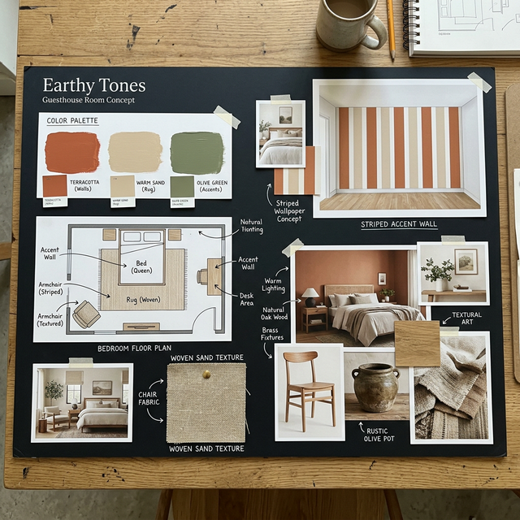
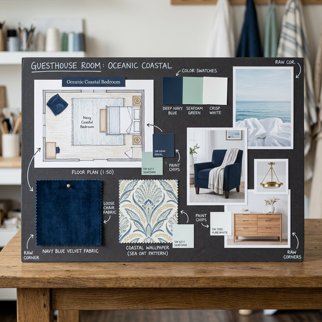
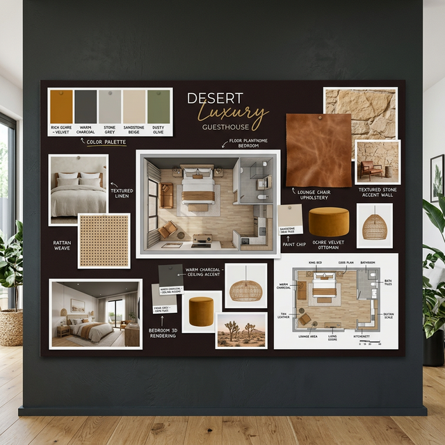

A grounding, natural aesthetic featuring terracotta, warm sand, and olive green with a striped accent wall concept.

A crisp, high-end coastal feel using deep navy blue, seafoam green, and crisp white, paired with rich velvet accents.

Inspired by the Namibian landscape, bringing in rich ochre, warm charcoal, stone grey, and worn tan leather finishes.